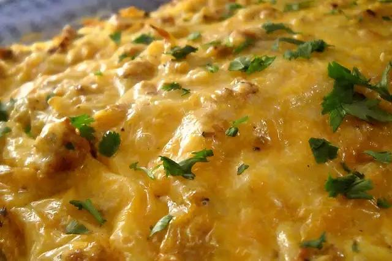

Father's Day Casserole

Description
My daughter and I created this for Father's Day. It is easy to make in a short amount of time.
- Prep: 20 mins
- Cook: 40 mins
- Total: 1 hr
- Servings: 12
- Yeld: 19x13-inch baking dish
Ingredients
- 1 (16 ounce) package bulk pork sausage
- 3 cups frozen hash brown potatoes, thawed
- ¼ cup milk, or as needed
- 1 (16 ounce) can refrigerated buttermilk biscuit dough (such as Pillsbury Grands!®)
- 1½ cups shredded Mexican cheese blend
- 5 eggs
Steps
- Preheat an oven to 350 degrees F (175 degrees C). Grease a 9x13-inch baking dish.
- Heat a large skillet over medium-high heat and stir in the sausage. Cook and stir until the sausage is crumbly, evenly browned, and no longer pink, about 5 minutes. Drain and discard any excess grease. Stir in the hash brown potatoes, cooking and stirring until potatoes are browned, about 5 minutes more.
- Line the bottom of the prepared baking dish with a layer of buttermilk biscuits, splitting the biscuits in half to completely cover the dish. Spread the sausage and hash brown mixture evenly over the biscuits, and sprinkle the Mexican cheese on top. Whisk together the eggs and milk in a bowl, and pour over the cheese.
- Bake in the preheated oven until the eggs set, about 25 minutes.
Per Serving: 369 calories; protein 14.5g; carbohydrates 24.1g; fat 24g; cholesterol 103.8mg; sodium 882.3mg.